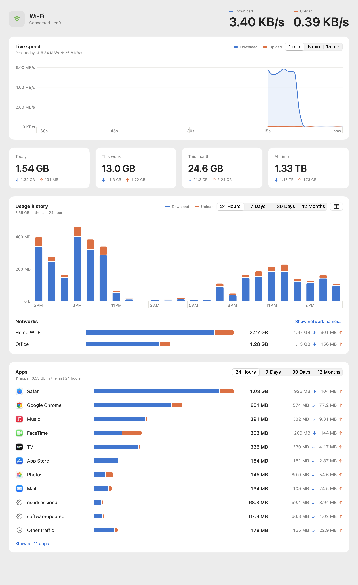

See exactly where your Wi-Fi goes.
Down now0 KB/s Up now0 KB/s
WiFi Tracker puts live download and upload speeds in your menu bar and keeps a private, minute-by-minute history of every megabyte, split by app and by network.
Not notarized yet: the first launch takes one extra click in Privacy & Security. How to open it
WiFi Tracker is a Mac app. Open this page on your Mac to download it.
The same bytes, by Wi-Fi network.
Your whole connection, at a glance
Open the dashboard for live speed, today/week/month totals, hourly-to-monthly history, a per-network breakdown, and every app ranked by how much it used. Hover any bar or point for exact numbers, or flip to a table.

Small app, complete picture
- Live in your menu bar
- 1 s
- Download and upload speed, updated every second. Show both, a combined figure, or just an icon, in MB/s or Mbps.
- History that adds up
- 12 mo
- Totals for today, this week, this month and all time, with charts for the last 24 hours, 7 or 30 days, and 12 months.
- Per app and per network
- See which apps use the most data, with each one’s live speed, and how much went over home, office or café Wi-Fi.
- Private by design
- 0 calls
- No account, no analytics, no network calls. Your history is a SQLite file in your Library folder that you can export as CSV or delete.
- Accurate to the byte
- 64-bit
- Reads the same 64-bit kernel counters as
netstat. If you quit the app, it catches up on the traffic it missed when it next opens. - Featherweight
- 1 MB
- A 1 MB native SwiftUI app using about 20 MB of memory. Opens at login if you want it to and stays out of your Dock.
Install in a minute
Requires macOS 14 Sonoma or later on Apple silicon or Intel.
-
Download
Get WiFiTracker.dmg and open it.
-
Drag to Applications
Drop WiFi Tracker onto the Applications folder in the window that appears.
-
Allow it to open
The app isn’t notarized by Apple yet, so the first launch is blocked. Open System Settings › Privacy & Security, scroll down and click Open Anyway.
Prefer Terminal? This clears the download quarantine flag instead of step 3:
xattr -dr com.apple.quarantine "/Applications/WiFi Tracker.app"
Questions
- Why does it ask for Location access?
- macOS only tells apps the name of your Wi-Fi network if they have Location Services access. WiFi Tracker uses the name to split usage by network and never requests your location. It’s optional: without it, usage is recorded under “Wi-Fi”.
- Does any of my data leave my Mac?
- No. The app makes no network requests of its own. History lives in
~/Library/Application Support/WiFiTracker/, and Settings has Export CSV and Clear History. - What exactly does it count?
- All traffic on your Mac’s Wi-Fi interface (usually
en0), including VPN traffic that travels over Wi-Fi. Ethernet and iPhone USB tethering aren’t counted. Per-app figures come from macOS’s own connection statistics (the same source asnettop), sampled every 2 seconds; Wi-Fi traffic that can’t be tied to an app, such as packet headers, is listed as “Other traffic” so the list always adds up. - What if the app isn’t running?
- Turn on “Open at login” and it’s always counting. If you quit it, the traffic in between is added the next time it opens, as long as the Mac hasn’t restarted in the meantime.
- How do I uninstall it?
- Quit it from the menu bar, drag it from Applications to the Trash, and delete the
~/Library/Application Support/WiFiTrackerfolder if you want your history gone too.
1 MB download
Free, for macOS 14 Sonoma and later on Apple silicon and Intel.
Download for MacWiFi Tracker is a Mac app. Open this page on your Mac to download it.
Animation is off because your system asks for reduced motion. The figures still update every second.